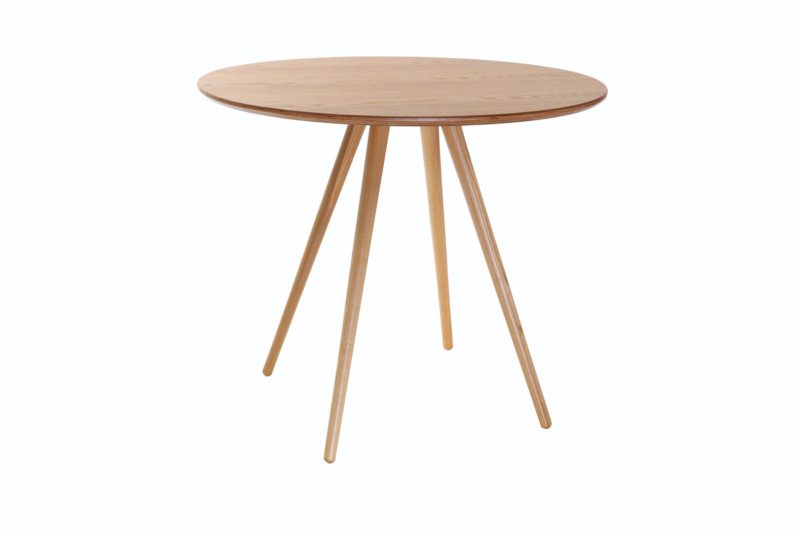

Élégante et robuste, la table à manger extensible NORDECO est facile à intégrer dans tous les styles d'intérieur !Avec un design inspiré des années 60, elle apportera à votre salle à manger une touche vintage tout en finesse. Sa forme épurée et sa finition frêne donnent à cette table à manger un style scandinave rétro. NORDECO est une table extensible indémodable, pouvant compléter un séjour d'inspiration nordique comme une salle à manger moderne ou vintage. En panneaux de fibres de bois 1.9 cm, cette table aux lignes douces permet de créer une atmosphère chaleureuse tout en sobriété.Le plus de cette table design c'est sa rallonge. Grâce à elle, la table à manger extensible NORDECO passe de 130 à 160 cm de long. De quoi manger en petit comité au quotidien et recevoir famille et amis occasionnellement en toute convivialité.Cette table à manger scandinave gain de place peut être accompagnée des chaises de la même gamme. Et pour ajouter une petite touche déco très tendance à votre espace repas, dépareillez ces chaises avec les chaises design PAULINE.